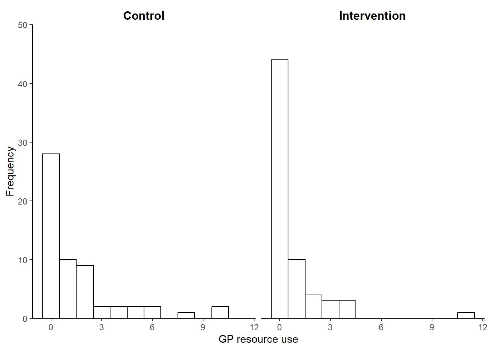
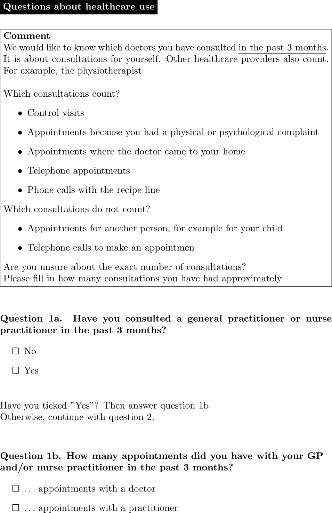

![]()

Healthcare resourse use data in economic evaluations
Quarto
R
Academia
Missing Data
Good day folks, and welcome back for a new update of my blog. Since in this period I am quite busy (I am actually moving so you can imagine the stress!), today I would like to talk about a “simpler” and more practical topic compared to what you normally see on this blog: what type and in which way are cost data obtained for individuals involved in economic evaluations? well, perhaps unsurprisingly, cost data do not exist per se but are instead attached to the use of a given service or produce which, in the context of economic evaluations, usually refer to some type of healthcare service or healthcare resource use (e.g. GP visit, hospital appointment, injections received, etc …) and the amount of each of these services that is “consumed” by the individual over a given time period.
I will only briefly touch on this subject since I do not possess an extensive knowledge about the reasons and problems associated with the selection of specific types of healthcare resource use for a trial, but I still think it is important for an analyst to be aware of how these type of data are collected, the possible alternatives that could be considered, and the related advantages and disadvantages when it comes down to collect, analyse and interpret the results of an analysis based on them.
Resource use data
In the context of trial-based analysis, healthcare resource-use (HRU) data consist in the resources/services consumed by the person or population with the health condition of interest for the economic evaluation. For example, common types of HRU information include number and type of visits to hospital (e.g. inpatient, outpatient, critical care) and any medications prescribed (e.g. type of drug, dose and duration of treatment). Resource-use information can, in principle, be analysed in its own right, although due to costs being one of the key aspects for economic evaluations, HRU data are often used only to generate costs which, instead, often represent the main focus of the economic analysis.
Identification of which type of resource use data to include in an economic evaluation requires consideration of the perspective of the study, the types of resource use likely to be relevant to the comparison (Drummond et al. 2015), and the target audience or user of the study (Gold 1996). Knowledge is required about the resources needed to perform the intervention as well as of the disease process itself, especially during and after treatment. It may also be important to identify whether the way in which care is delivered varies between different centres or settings: for example, some hospitals may routinely perform a procedure on a day-case basis, while others may require an overnight stay (Gray et al. 2010).
The type and number of different resources used can be collected in a number of ways including patient files, administrative databases, questionnaires, or the relevant literature. The specific method used to collect HRU data will be dependent on the type of economic evaluation, whether access to patient level data is possible, and the costs and benefits associated with each option for collecting resource use information. For example, for trial-based economic evaluations, data on resource quantities, such as types and amounts of drugs administered, is typically collected via case report forms for the trial. Alternatively, in case of a stand-alone economic evaluation, resource quantities could be estimated from data systems, such as hospital records or patient case notes. For some items of resource use, such as health visitor contacts, the difficulty of accessing routinely recorded information may impose to ask patients to provide estimates of their use of these resource items, for example by completing questionnaires, giving interviews, or keeping diaries.
In the UK, the Client Service Receipt Inventory(CSRI) is a commonly used example of research instrument used at multiple points within a study which is aimed at capturing resource use patterns and related costs over time (Beecham and Knapp 2001). Although a fully standardised or universally applicable form does not exist, the CSRI is often characterised by questions related to common thematic areas: background client information, accommodation, employment history, types of service used (e.g. hospital, primary care, etc.), and informal care. In the Netherlands, the iMTA Medical Consumption Questionnaire (iMCQ) is the most popular instrument for measuring medical consumption for economic evaluations alongside clinical trials (Rotterdam 2018). The iMCQ includes questions related to frequently occurring contacts with health care providers and is frequently combined with the iMTA Productivity Cost Questionnaire (iPCQ) as a short generic measurement instrument for measuring and valuing productivity losses (Bouwmans et al. 2015). In the example, shown in Figure 1, of a typical question about healthcare use within the iMCQ, participants are first asked to recall whether they consulted an healthcare professional over a pre-specified past period (Question 1a). Depending on their choice, the questionnaire re-directs the respondent to either specify the number of appointments taken (Question 1b) or to simply go to the following question about a different type of resource use. This specific formulation of the questions allows to discern the participants who used a given type of service from those who did not and, for the former, to retrieve numerical evidence about the amount of the service used within a given time period. The same approach is typically replicated for most types of healthcare services to include evidence of their use (and related costs) in the economic evaluation.

Alongside trials, Ridyard and Hughes (2010) identified five main data collection methods for HRU data: 1) Medical records (e.g. patient notes, large databases); 2) Prospective forms completed by trial researchers or healthcare professionals, either based on patient recall or not; 3) Patient-completed or carer-/non-healthcare professional completed instruments, either in the form of diaries or forms/questionnaires. While medical records tend to be more complete with the potential to provide a longer time period of retrospective data for the patient, they require more resources and may have patient consent and confidentiality issues associated with accessing the information. Alternatively, self-reported questionnaires may represent a cheaper and relatively simple way to collect HRU information from the population of interest, but they may result more burdensome for patients to complete and potentially lead to a considerable loss of information (Clarke, Fiebig, and Gerdtham 2008).
A key advantage of using standardised instruments for collecting resource use data, such as CSRI or iMCQ, is to facilitate cross-study comparisons. However, there may be specific aspects of resource use and costs that are important to capture in certain, but not all, decision problems. As such, standardised resource-use measurement instruments may not be specific enough to capture all important resources for particular decision problems (Byford et al. 2007). Researchers tend to tailor instruments to focus on specific information needed for analysis, which is particularly important when taking a broader perspective, such as information related to informal care and other wider aspects that are not routinely collected within medical records or in large databases. Medical records offer an alternative approach to HRU data collection that can include anything from raw data extracted straight from a service, to the level of linked datasets across multiple services. However, an issue with electronic datasets is that they may only adequately record data for a particular service, pose concerns related to data quality that require assessment and validation, and question the exchangeability of using person-reported or medical records data as they may produce quite different estimates (Noben et al. 2016).
We will exclusively focus on the description and analysis of HRU and cost data generated based on participants’ responses to some form of standardised instrument, which has traditionally represented the standard approach for HRU data collection in trial-based economic evaluations (franklin2019self?). However, we note that, no specific data collection method can currently be considered the “gold standard” for the purpose of informing trial-based analyses. In most cases, it is the researcher who decides on which method depending on the circumstances (e.g. trial design, setting, etc.) and the data of interest for the trial.
Figure 2 shows the observed GP HRU data by treatment arm collected via iMCQ over a period of 12 weeks from a two-arm RCT of continence care for people with intellectual disabilities in the Netherlands (Van Cooten et al. 2022). Similarly to what shown in the graphs, most type of HRU data tend to share similar features from a statistical perspective: can vary widely between participants, are bounded below by 0 (i.e. no use), tend to be positively skewed, and are often affected by some missing values. In particular, the presence of positive skewness in HRU data is typically due to the fact that a small number of individuals consume large HRU values while the rest tends to use relatively small or no quantities of the healthcare service.
Table 1 reports summary statistics for the HRU GP data by treatment arm in the continence care trial. In both arms, GP observed resource use are characterised by small average and median values with relatively large variation measures and non-negligible missing percentages. In addition, among the observed values, about 48% and 68% are those associated with no use of service (i.e. zero) in the control and intervention arm, respectively.
| Characteristic | Control N = 74 |
Intervention N = 82 |
|---|---|---|
| HRUgp | ||
| Mean (SD) | 1.59 (2.43) | 0.77 (1.69) |
| Median (IQR) | 1.00 (2.00) | 0.00 (1.00) |
| Missing | 16 (22%) | 17 (21%) |
These characteristics are common to most types of individual-level HRU data collected alongside trials via self-reported instruments and may pose considerable challenges for the statistical analysis in the economic evaluation.
Sorry for the short post but I hope it was still interesting to have a look at this topic which, I must say, if often neglected in the context of data analysis, where focus is simply given to cost data. However, I believe that taking into consideration the “true” source of costs, i.e. type and number of healthcare services used, may represent a key aspect when performing economic evaluations. For example, the ability to distinguish the different components that form the total costs for an individual may be important in order to understand what are the main drivers of the costs as well as to identify specific groups of resource use data that are characterised by unexpected and/or challenging features (e.g. excess of zeros due to lack of use of service).
In addition, what happens when data are only partially-collected for some resource use types but not for others? can we think about possible reasons for why individuals did not use a given service or perhaps this type of missingness was mostly likely due to a lost record? I will come back to this point in the future but, for the moment, let’s just say that the type and level of data aggregation at which you address missingness may be quite important and influence the results of an analysis. However, in practice, there seems to be a general lack of clarity about how missing resource use data are addressed in the literature Ling et al. (2022), which makes the reliability of the (implicit) assumptions formulated in the analysis stage much more difficult to justify!
More about this topic in the future, also from a more quantitative research-oriented perspective, stay tuned!
References
Beecham, J, and M Knapp. 2001. “Costing Psychiatric Interventions. Thornicroft g, Ed.” Measuring Mental Health Needs. London: Gaskell 201: 24.
Bouwmans, Clazien, Marieke Krol, Hans Severens, Marc Koopmanschap, Werner Brouwer, and Leona Hakkaart-van Roijen. 2015. “The iMTA Productivity Cost Questionnaire: A Standardized Instrument for Measuring and Valuing Health-Related Productivity Losses.” Value in Health 18 (6): 753–58.
Byford, Sarah, Morven Leese, Martin Knapp, Helen Seivewright, Susan Cameron, Vanessa Jones, Kate Davidson, and Peter Tyrer. 2007. “Comparison of Alternative Methods of Collection of Service Use Data for the Economic Evaluation of Health Care Interventions.” Health Economics 16 (5): 531–36.
Clarke, Philip M, Denzil G Fiebig, and Ulf-G Gerdtham. 2008. “Optimal Recall Length in Survey Design.” Journal of Health Economics 27 (5): 1275–84.
Drummond, Michael F, Mark J Sculpher, Karl Claxton, Greg L Stoddart, and George W Torrance. 2015. Methods for the Economic Evaluation of Health Care Programmes. Oxford university press.
Gold, MR. 1996. Cost-Effectiveness in Health and Medicine. Vol. 20. Oxford University Press.
Gray, Alastair M, Philip M Clarke, Jane L Wolstenholme, and Sarah Wordsworth. 2010. Applied Methods of Cost-Effectiveness Analysis in Healthcare. Vol. 3. OUP Oxford.
Ling, Xiaoxiao, Andrea Gabrio, Alexina Mason, and Gianluca Baio. 2022. “A Scoping Review of Item-Level Missing Data in Within-Trial Cost-Effectiveness Analysis.” Value in Health 25 (9): 1654–62.
Noben, Cindy Yvonne, Angelique de Rijk, Frans Nijhuis, Jan Kottner, and Silvia Evers. 2016. “The Exchangeability of Self-Reports and Administrative Health Care Resource Use Measurements: Assessement of the Methodological Reporting Quality.” Journal of Clinical Epidemiology 74: 93–106.
Ridyard, Colin H, and Dyfrig A Hughes. 2010. “Methods for the Collection of Resource Use Data Within Clinical Trials: A Systematic Review of Studies Funded by the UK Health Technology Assessment Program.” Value in Health 13 (8): 867–72.
Rotterdam, EU. 2018. “iMTA Productivity and Health Research GroupManual iMTA Medical Cost Questionnaire (iMCQ).” Rotterdam: iMTA.
Van Cooten, Vivette JC, Marieke FM Gielissen, Ghislaine APG Van Mastrigt, Wouter Den Hollander, Silvia MAA Evers, Odile Smeets, Filip Smit, and Brigitte Boon. 2022. “Smart Continence Care for People with Profound Intellectual and Multiple Disabilities: Protocol for a Cluster Randomized Trial and Trial-Based Economic Evaluation.” JMIR Research Protocols 11 (11): e42555.